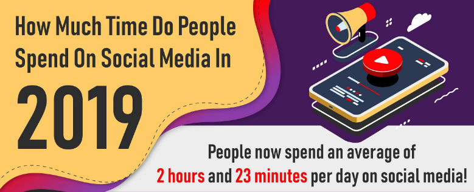
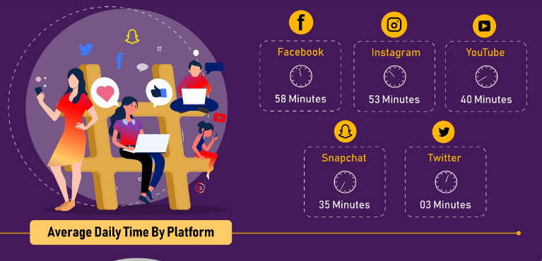

Written by Jackie Brown
Proving that infographics are still hugely popular, quotable and shareable, here’s a nice infographic from Famemass,
which looks at how much time people spend connected to social media, and on which specific platforms.
Roughly 45% of the world’s population use social media, with an average of 2 hours and 23 minutes spent per day
on social media.


We are also interested in how much time do you spend on social media and which platforms are most common for you?
Please send us your answers by filling up the form below.